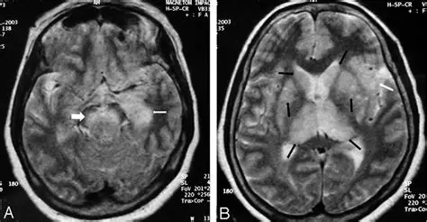

Educação médica continuada
Aulas e Capacitações
Aulas, palestras e materiais de apoio para aprofundar o estudo das neuroinfecções e das doenças do sistema nervoso central.
Neuroinfectologia · Educação · Pesquisa
Materiais didáticos
A formação em neuroinfectologia exige integração entre clínica, microbiologia, neurologia e métodos diagnósticos.

Materiais disponíveis
REPOSITÓRIO · AULAS E CAPACITAÇÕES
Preparando o acervo…